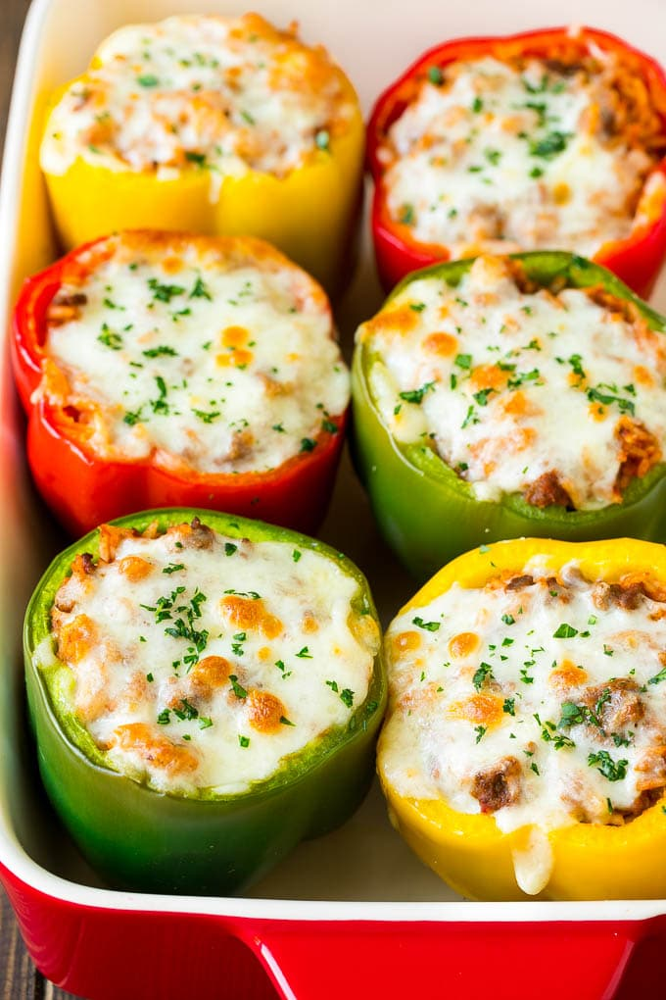

Stuffed Bell Peppers

Description
Stuffed bell peppers have been popular for many years for good reason – they’re totally delicious! My version features a hearty beef and rice mixture with plenty of melted cheese. Serve your stuffed peppers as-is, or add a side salad for a meal that your family will be sure to love.
Ingredients
- 6 bell peppers any color, or a combination of colors
- 2 teaspoons olive oil
- 1 1/2 pounds ground beef I use 90% lean
- 1/2 cup onion finely chopped raw rice
- salt and pepper to taste
- 15 ounce can tomato sauce
- 1 1/2 cups mozzarella cheese shredded, divided use
- 2 tablespoons parsley chopped
- cooking spray
Steps
- Preheat the oven to 350 degrees F. Coat a large baking dish with cooking spray.
- Slice the tops off the peppers and remove the ribs and seeds inside.
- Place the peppers cut side down in the baking dish. Add 1 1/2 cups of water to the dish.
- Cover the dish with foil and bake for 25 minutes.
- While the peppers are cooking, prepare the filling. Heat the olive oil in a large pan over medium heat.
- Add the ground beef and season with salt and pepper.
- Cook for 5-6 minutes, breaking up the meat with a spatula, until meat is cooked through.
- Add the onion to the pan and cook for 3-4 minutes or until softened. Add the garlic and cook for 30 seconds.
- Add the rice, tomato sauce and Italian seasoning. Stir to combine. Stir in 1/2 cup cheese and salt and pepper to taste.
- Remove the peppers from the oven and drain off the water. Turn the peppers over and fill each one with the beef mixture.
- Top each pepper with the remaining cheese. Cover and bake for 20 minutes. Uncover and bake for another 10 minutes or until cheese is melted and browned and peppers are tender.
- Sprinkle with parsley, then serve.
Back to Main Menu